Section 1 / 1.1 LaTeX Installation
1.1.1 Option 1: TeX Live (fast)
Quick installation in about 10 minutes. Additional packages can be downloaded later via TeX Live Manager.
Step 1.
Google에서 TeX Live을 검색하여 사이트에 접속하세요.
Search for TeX Live on Google and visit the website.
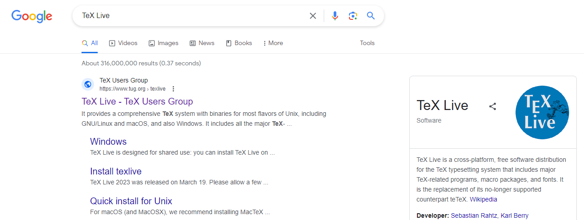
Step 2.
자신의 컴퓨터의 OS에 맞게 설치 파일을 다운로드 하세요.
Download the installation file for your operating system.
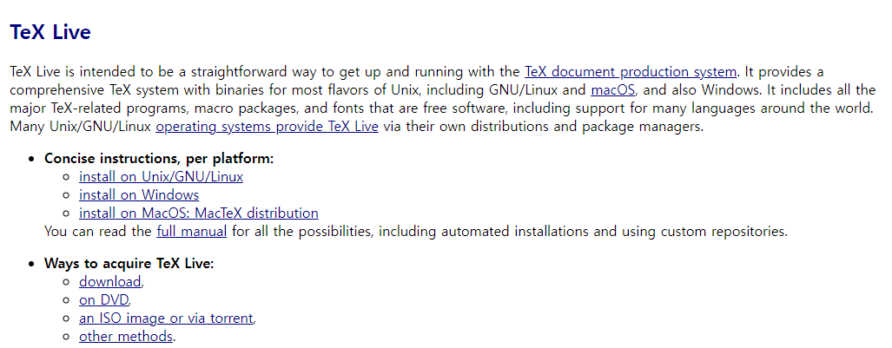
Step 4.
잠시 기다리면 창이 뜹니다. Advanced를 클릭하세요.
After a short wait, click Advanced.
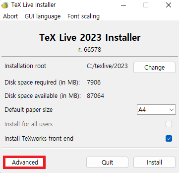
Step 5.
Selections에서 Change를 클릭하여 small scheme을 선택하세요.
In Selections, click Change and select small scheme.
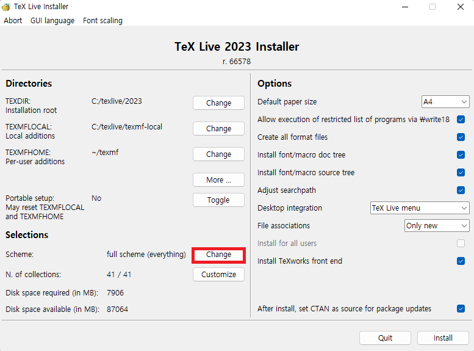
Step 6.
Selections에서 Customize를 클릭하여 원하는 언어를 선택하세요.
Click Customize and select your preferred language.
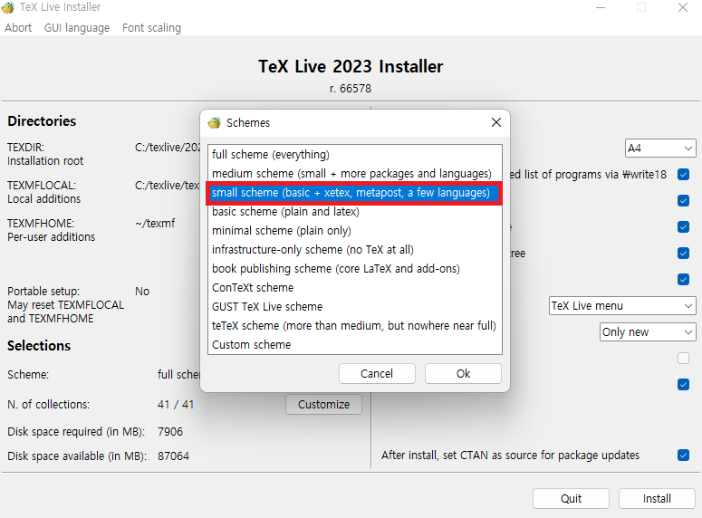
Step 8.
TeX Live Manager을 실행하세요.
Run the TeX Live Manager.
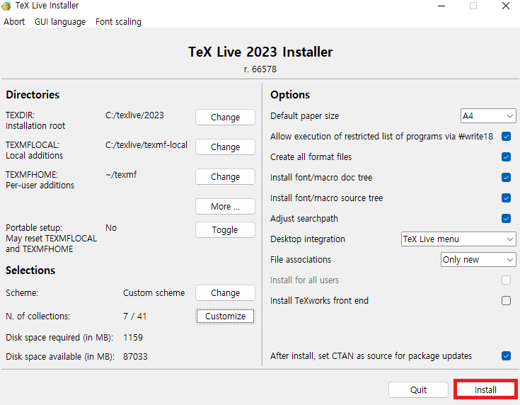
Step 3.
TeX Live Installer을 실행하세요.
Windows에서는 계정 이름이 영어로 되어야 합니다.
Run the TeX Live Installer. On Windows, your account name must be in English.
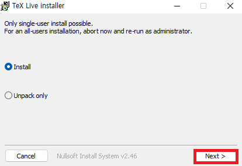

Step 7.
Install 버튼을 클릭하면 설치가 진행됩니다. (약 10분 소요)
완료 후 Close를 클릭하세요.
Click Install (approx. 10 min). When complete, click Close.
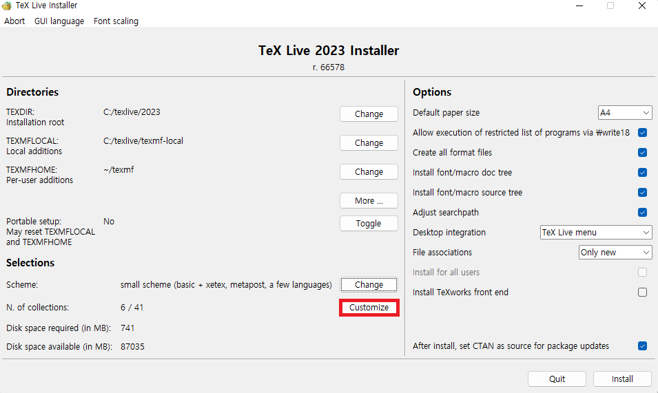
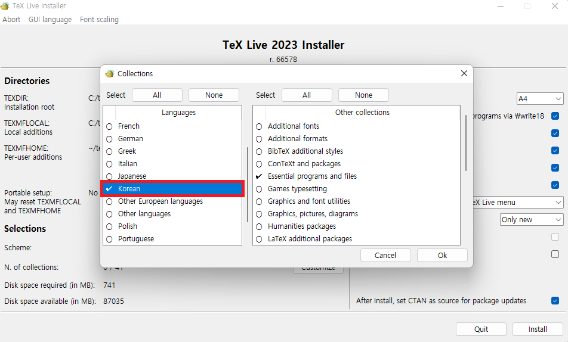
Step 9.
Not installed를 선택하여 latexmk를 검색하고 2개의 패키지를 선택한 후 install marked를 클릭하세요.
Select Not installed, search latexmk, select the two packages, then click install marked.
To install additional packages in the future, repeat Steps 8 and 9.
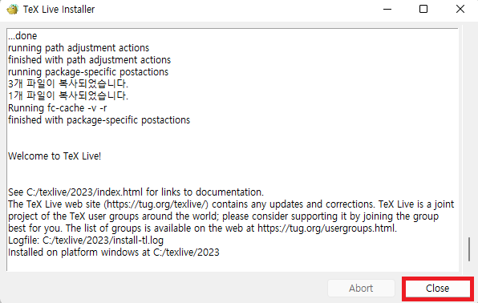
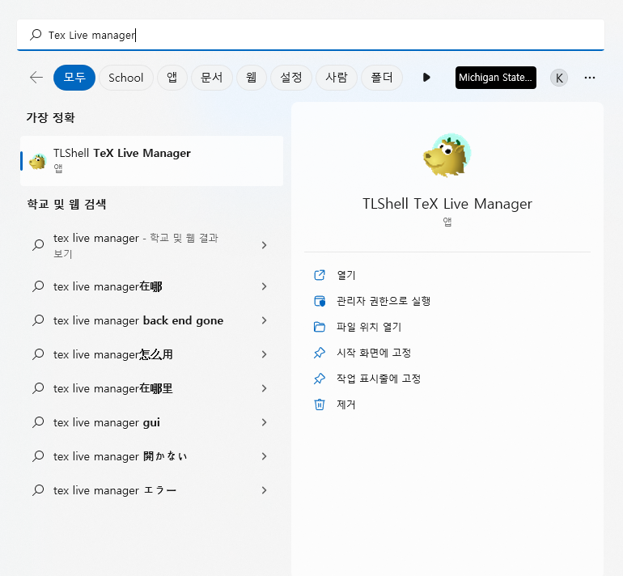
Troubleshooting
Error: PATH environment variable
가끔 Windows에서 환경 변수 관련 오류가 발생할 수 있습니다.
Occasionally, Windows may experience errors related to environment variables.
- 고급 시스템 설정 보기를 실행합니다.
Run View Advanced System Settings. - 환경 변수를 클릭하세요.
Click Environment Variables. - 시스템 변수에서 Path를 클릭하고 편집을 클릭하세요.
Under System Variables, click Path then Edit. - 새로 만들기를 클릭하세요.
Click New. %ComSpec%경로를 입력하세요.
Type the ComSpec path value.- 확인을 클릭하세요.
Click OK.
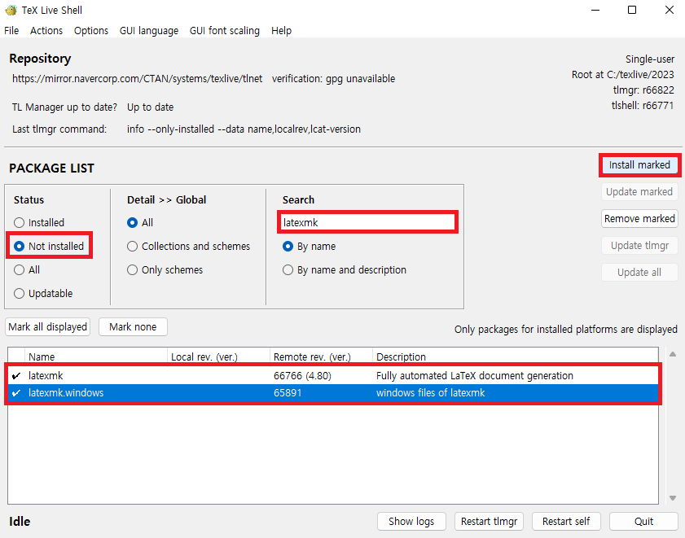
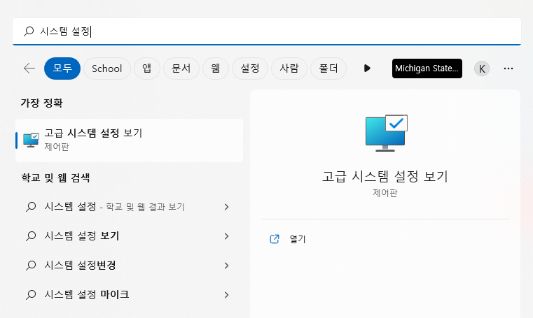
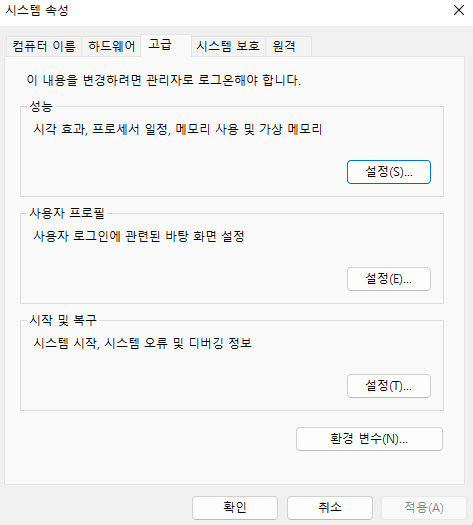
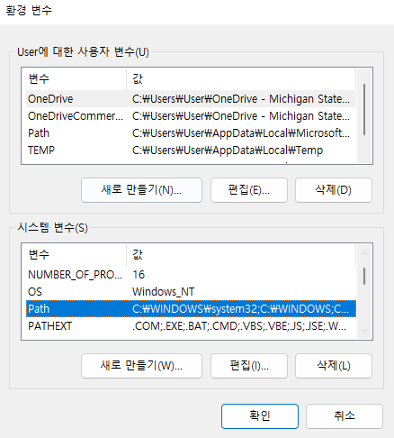
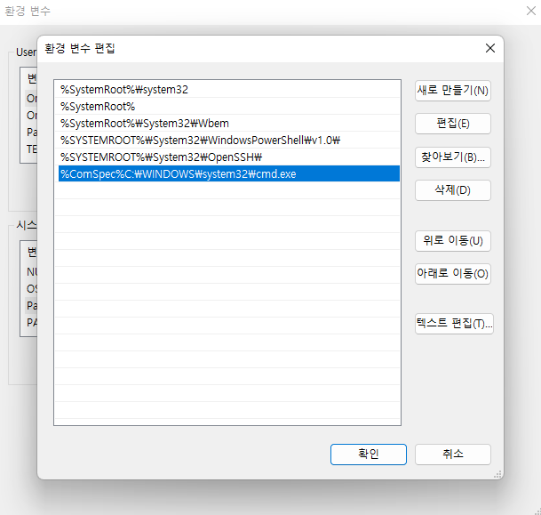